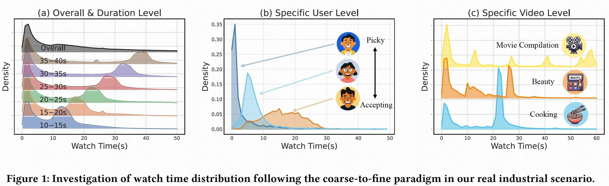
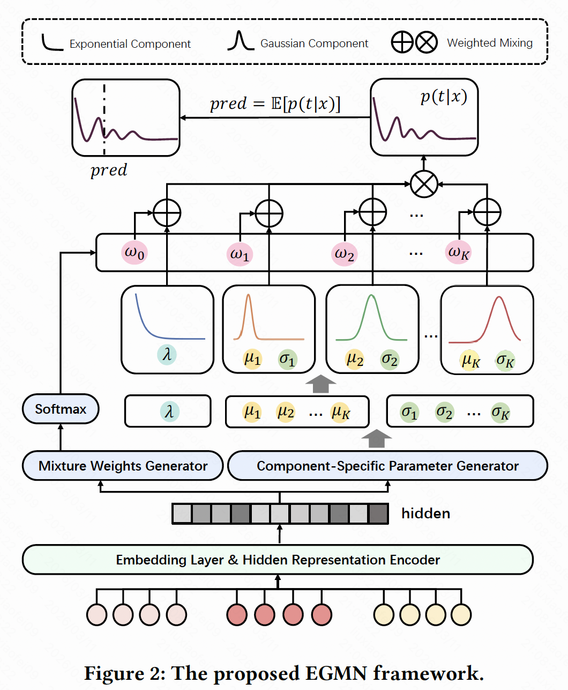
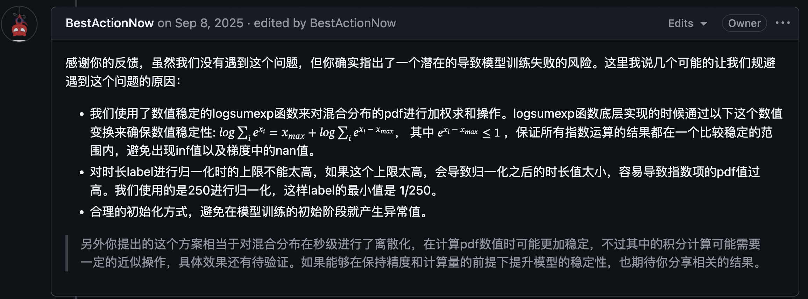

EGMN
👋我认为当我们掌握一定专业基础后，打开思路认真读一篇相对较好的paper会有很大收获。
我曾在面试中被问到我的label数据符合什么分布，然后这样的分布该如何去建模。这其实就是一个典型的剖析问题再去建模的场景。以此为例，今天我会深度阅读小红书发表在 RecSys’2025 的工作：基于指数-高斯混合网络的多粒度分布建模用于视频观看时间预测——Multi-Granularity Distribution Modeling for VideoWatch Time Prediction via Exponential-Gaussian Mixture Network。
1. 时长预估问题定义与建模
问题定义：短视频推荐系统中时长预估（Watch Time Prediction）的目标是根据用户、视频及上下文信息，预测用户对某个视频的观看时长。从数学上看，给定一个特征向量 $\mathbf{x} \in \mathbb{R}^d$ 包含用户特征、视频特征、上下文特征，期望找到一个函数 $f: \mathbb{R}^d \to \mathbb{R}^+$，使得预测值 $f(\mathbf{x})$与真实观看时长 $t \in \mathbb{R}^+$之间的误差最小化。
由于观看时长数据具有独特的分布特性，给建模带来挑战：
- 粗粒度偏态：大量样本集中在极短时间如快速跳过，形成靠近零的尖峰。
- 细粒度多样性：不同用户、不同视频之间的观看模式差异巨大，可能存在多峰、重尾等复杂分布。

因此，时长预估不仅是一个回归问题，更是一个对复杂、多峰条件分布进行建模的问题。
2. 主流方法及存在问题
现有方法大致可分为以下几类：
- 直接回归（Value Regression, VR）：采用 MSE 或 MAE 作为损失函数直接拟合观看时长。但 MSE 隐含假设标签服从高斯分布，而实际时长分布严重偏斜且多峰，导致模型对长尾或极短值拟合不佳。
- 加权逻辑回归（Weighted Logistic Regression, WLR）：将观看时长作为正样本的权重，将回归问题转化为加权二分类比如点击/未点击。这种方法需要显式点击信号，而在短视频连续滑动场景中不存在点击行为，且无法直接输出绝对时长。
- 去偏方法（Debiasing Methods）：这些方法通常引入刚性分组或复杂变换，可能损失分布信息，或忽略细粒度模式如重放、多峰，且难以统一处理跨粒度多样性。经典的有：D2Q 将视频按时长分组，分别做分位数回归，以消除时长偏置，但区间边缘会有不连续预估；CWM 通过因果校正函数消除时长截断带来的偏置；D2CO 使用高斯混合模型分离噪声观看和真实兴趣。
- 离散化与分类方法（Classification-based Methods）：离散化会引入信息损失，且重建过程可能放大误差，难以精确还原连续分布。经典的有：TPM 将时长预测转化为树状概率模型的层次分类；CREAD 通过误差自适应的离散化，将回归转化为分类再重建。
- 生成式回归（Generative Regression, GR：ks同年的工作，将时长预测视为序列生成任务，类似残差的思想用自回归模型生成连续值。这种方法计算复杂度高，工业部署难度大，且对离散化策略依赖较强。
总体来看，现有方法要么过于简化分布假设，要么通过复杂变换丢失信息，难以同时兼顾粗粒度偏态与细粒度多样性。我们来看看EGMN怎么做的。
3. EGMN
指数-高斯混合网络（EGMN）假设观看时长服从指数-高斯混合分布，并用神经网络直接估计该分布的参数，从而既能捕获粗粒度偏态，又能适应细粒度多样性。整体建模流程如下：
- 分布假设：指数分量建模快速跳过行为，其概率质量集中在零附近。高斯混合分量建模多样化的正常观看模式，可拟合任意多峰分布。
$$
p(t) = \omega_0 f_{\text{exp}}(t|\lambda) + \sum_{k=1}^K \omega_k f_{\text{gauss}}(t|\mu_k, \sigma_k^2)
$$ - 网络架构：隐表示编码器将输入特征 $\mathbf{x}$映射到共享隐表示 $\mathbf{h}$。EGMN 是一种主干网络无关的范式，backbone 可以实例化为任何适用于推荐预测场景的特征编码主干，如 DIN、SENet、Transformer等。混合参数生成器基于 $\mathbf{h}$分别生成各分量的参数，包括指数率 $\lambda$、高斯均值 $\mu_k$、方差 $\sigma_k^2$、混合权重 $\omega_k$。为保证可识别性，强制高斯均值大于指数均值$\mu_k>1/\lambda$，使指数分量专攻左侧尖峰，高斯分量负责右侧多峰。
- 训练目标联合优化三个损失：最大似然损失、熵正则化损失、回归损失。
- 推理：直接输出分布，取期望值作为最终预测；同时可提供分位数、置信区间等额外信息。

最大似然估计损失（MLE Loss）：MLE loss 是生成式模型的标准目标，它鼓励模型为每个样本的真实观看时长 $t_i$ 分配尽可能高的概率密度。直观理解就是最大化似然等价于最小化预测分布与真实分布之间的 KL 散度。因此 MLE loss 驱动模型学习数据的概率结构，而不仅仅是期望值。MLE loss 对异常值相对稳健，因为它是基于整个密度而非平方误差。
$$L_{MLE} = -\frac{1}{N}\sum_{i=1}^{N} \log p(t_i|x_i)$$
$$p(t|x) = \omega_0 f_{\mathrm{exp}}(t|\lambda) + \sum_{k=1}^{K} \omega_k f_{\mathrm{gauss}}(t|\mu_k,\sigma_k^2)$$
熵最大化损失（Entropy Loss）：在混合模型训练中，如果没有约束，模型可能倾向于只用少数几个分量来拟合所有数据，导致其他分量闲置，称为“分量坍缩”或“模态坍缩”。Entropy loss 通过鼓励权重均匀分布即高熵来迫使模型激活多个分量，确保每个样本的预测分布都会用到多个高斯分量，从而保留建模多峰的能力。注意计算时取对数后求和，实际上是负熵，因为熵 $H = -\sum \omega \log \omega$，所以最小化 $\mathcal{L}_{\mathrm{entropy}}$ 等价于最大化熵。
$$L_{entropy} = \frac{1}{N}\sum_{i=1}^{N} \sum_{k=0}^{K} \omega_k(\mathbf{x}_i) \log \omega_k(\mathbf{x}_i)$$
回归损失（Regression Loss）：尽管 MLE loss 能拟合分布，但模型的最终应用往往是输出一个具体的预测值。Regression loss 直接最小化预测期望与真实值之间的绝对误差，确保模型在点估计上的精度。MLE 关注密度，但不一定保证期望值准确，特别是当分布拟合存在偏差时。回归损失起到了“校准”作用，让期望值更贴近真实标签。公式里使用 MAE 而非 MSE，可能因为MAE 对异常值更鲁棒，且与推荐系统中常用的排序指标 AUC 关联更紧密。
$$L_{reg} = \frac{1}{N}\sum_{i=1}^{N} |t_i - \hat{t}_i|$$
$$\hat{t}_i = E[p(t|x_i)] = \omega_0 \frac{1}{\lambda} + \sum^{K}_k \omega_k \mu_k$$
Q1: 分布的输出为什么要使用softplus激活函数？
- softplus激活函数定义为：$softplus(z) = log(1 + e^z)$。softplus可以看作是ReLU的一个光滑近似。当 $z$ 是一个很大的负数时，$e^z$ 趋近于0，$softplus(z)$ 趋近于 $log(1) = 0$。当 $z$ 是一个很大的正数时，$softplus(z)$ 趋近于 $log(e^z) = z$。EGMN 中使用 softplus 是为了将一个线性层的输出转换成一个合法的、值为正的分布参数（指数率、均值偏移量、方差）。虽然可以使用其他强制正性的方法如取绝对值或 $exp$ 指数函数，但 $softplus$ 提供了一个平滑的替代方案。特别是相比于 $exp$，$softplus$ 在输入为很大的负数时，输出会平滑地趋近于0，而不是一个非常接近0的正数，
Q2: 为什么要约束“高斯分量的均值超过指数分量的均值”
- 这里涉及到混合模型中的一个概念：可识别性。在一个混合模型中，比如 $ω₀ * 指数分布 + ω₁ * 高斯分布1 + ω₂ * 高斯分布2$，如果没有任何约束，模型在训练时可能会产生分量模糊，导致训练不稳定。例如，在训练过程中，本来负责建模“快速跳过”的指数分量，可能会试图去拟合一个“完整观看”的数据峰，而某个高斯分量则可能去拟合“快速跳过”的数据。由于神经网络只是最小化损失函数，它不在乎哪个分量负责哪部分数据，只要最终混合出来的概率密度能拟合真实分布就行。EGMN通过引入了一个先验知识或归纳偏置，来强制性地为每个分量分配一个明确的“职责”。
$$\mu_k(x) = \frac{1}{\lambda(x)} +\mathrm{softplus}(W_{\mu_k}h + b_{\mu_k})$$
- 指数分量 $f_{exp}$ 建模接近 0 的、高度集中的“快速跳过”行为。它的均值是 $1/\lambda$。由于 $\lambda$ 通常较大，因为快速跳过的平均时间很短，所以 $1/\lambda$ 是一个很小的数，非常接近0。所有的 $\mu_k$ 都强制性地以这个值为基础，这样指数分量被固定在了分布的最左端靠近0的位置，而所有高斯分量都被强制位于它的右侧。
- 高斯分量 $f_{gauss}$ 建模正常的、多样的观看行为。它们的均值 $\mu_k$ 应该对应于有意义的观看时长，比如看完一部分、看完大部分、或者完整观看甚至重放。
这里有一个MLE loss训练不稳定的问题。代码中用 logsumexp 而非 log(sum(exp(...)))，logsumexp 先减最大值避免指数爆炸导致的数值不稳定。另外 label 的归一化也很重要，代码中将超长视频时长截断到最大播放时长，避免极端大值对模型造成负面影响。label 和视频时长两个字段都除以 df['play_duration'].max()，保证 play_time 和 duration 在同一量纲下，使得 play_time ≤ duration（理论上观看时长不会超过视频时长）。
这里也贴一下作者的回复：

4. 关键代码解读
1 | class EGMN(torch.nn.Module): |
5. 拓展
EGMN 优缺点分析
- EGMN 的分布假设合理符合业务分析，各分量有明确的物理意义（快速跳过、部分观看、完整观看等），可解析性强。指数分量精准捕捉快速跳过导致的尖峰，高斯分量灵活拟合任意复杂模式，整体符合实际数据分布。模型是端到端训练，直接输出分布参数，适合工业部署。除点预测外，还能输出置信区间、分位数等，支持更多样的策略设计。
- 但 EGMN 的高斯分量数量需要预先指定 $K$，过少可能欠拟合，过多可能过拟合。论文实验表明 8~12 个较优，但仍需调参。EGM分布虽能拟合多峰，但理论上仍是一种特定形式的混合，极端复杂的分布可能需要更多分量或更灵活的基函数。
EGMN 在其他场景中的潜在应用：
EGMN 用混合分布建模连续值，并利用神经网络参数化该分布，这一范式可推广至多种涉及连续值预测的任务，尤其是数据分布呈现多峰、偏态、异质特点的场景。比如：
- 消费金额预测：电商中的客单价、游戏内付费金额，往往有大量低消费和少量高消费，分布偏态明显。
- 点击率/转化率校准：在 CTR 模型中，常需输出概率值，但真实分布可能多峰如不同用户群差异，可用混合 Beta 分布替代简单logistic 分布。
如果对 EGMN 做优化，可以从哪些方面考虑？当然这些拓展会让整体结构更复杂，这里仅做讨论。
模型架构优化：
- EGMN需要预先指定高斯分量数 K，且对所有样本使用相同的 K。我们可以引入可学习的分量门控，让模型根据输入特征动态决定使用多少个分量，减少调参成本，提升模型对数据分布变化的适应能力。
- EGMN 假设指数分布+高斯混合，可以引入其他分布提升模型对不同业务场景的通用性。比如引入对数正态分布适用于长尾更严重的场景；引入 Beta 分布，当目标值有明确上下界时如归一化时长使用；设计可微分分布选择模块，让模型自动选择最优基分布。
- EGMN 是 point-wise 模型，未利用用户行为序列信息。可以结合 Transformer/GRU 对用户历史观看序列建模，输出动态隐表示。捕捉用户兴趣演化，提升个性化程度。
训练优化：当前三个损失加权求和，权重需要人工调优。可以引入不确定性加权或多任务学习的动态权重调整。
因果推断与去偏拓展：
- EGMN 通过特征工程间接处理时长偏置，未显式建模因果结构。那么如果视频时长不同，观看时间会如何，这里可以做一些因果消偏设计。
- EGMN 仅预测观看时长，未区分不同行为背后的意图。采用多任务学习同时预测”是否观看”、”观看时长”、”是否点赞”等，共享表示但任务特定 head，这样可以更精细地理解用户行为，支持多目标排序。